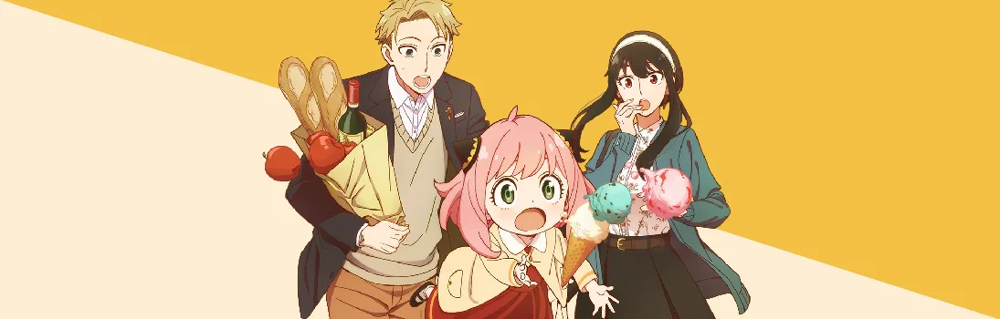

Семья Шпиона
Sasaki to Miyano
Для гениального шпиона по прозвищу Сумрак нет ничего невозможного. Он берётся за самые сложные миссии и всегда доводит дело до конца.
Но на этот раз тайному агенту дают весьма неординарное задание: объединиться с опытной наёмницей и ребёнком-телепатом, чтобы под прикрытием подобраться к влиятельному человеку. Фиктивной семейке Форджеров нужно за неделю провести расследование и предотвратить крупный политический конфликт.
Несмотря на комичную завязку, нас ждёт не просто увлекательная пародия на знаменитые голливудские фильмы. В сюжет мастерски вплетены личные истории героев и вопросы о жизненных ценностях.
Сезон:
Весна, 2022
Возрастной рейтинг:
16+
Эпизоды:
9 / 12
Статус:
В работе
Жанры:
Детектив, Экшен, Комедия, Романтика, Драма, Сверхъестественное